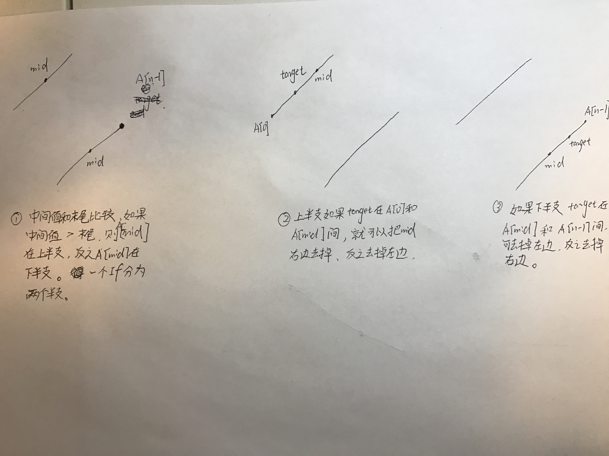

public int search(int[] A, int target) {
// write your code here
if ( A == null || A.length == 0){
return -1;
}
int start = 0;
int end = A.length - 1;
while( start + 1 < end){
int mid = start + ( end-start)/2;
if ( A[mid] > A[A.length - 1]){
if ( target >= A[0] && target <= A[mid]){
end = mid;
}else{
start = mid;
}
}else if ( A[mid] < A[A.length - 1]){
if ( target >= A[mid] && target <= A[A.length - 1]){
start = mid;
}else{
end = mid;
}
}else{
return mid;
}
}
if ( A[start] == target) return start;
if ( A[end] == target ) return end;
return -1;
}
Space complexity : O(1)
Algorithm
1. 精典，见图
